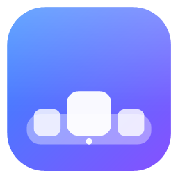

Apps for Windows
Small, tidy apps that make Windows nicer to use – with the look of Windows 11. Free and open source.

HeMiDock
A dock, Start menu, control center and window manager in place of the Windows taskbar.

HeMiPix
Converts photos between HEIC, JPG, PNG, WebP and TIFF – whole folders at once, smaller and cropped if you wish.

HeMiUnlocker
Shows which program holds a file or folder that cannot be deleted or moved, and closes it.

HeMiPad
A light replacement of Notepad with dark mode, colours for JSON and YAML, and spell check – no internet at all.

HeMi Dark
A dark skin for VLC media player in the style of Windows 11 – nine colours, every display scaling.
The same rules for all
Free and open source
MIT license, all code on GitHub, every download built from it in the open.
No ads, no tracking
No telemetry and no accounts; HeMiPix, HeMiUnlocker and HeMiPad never go online at all.